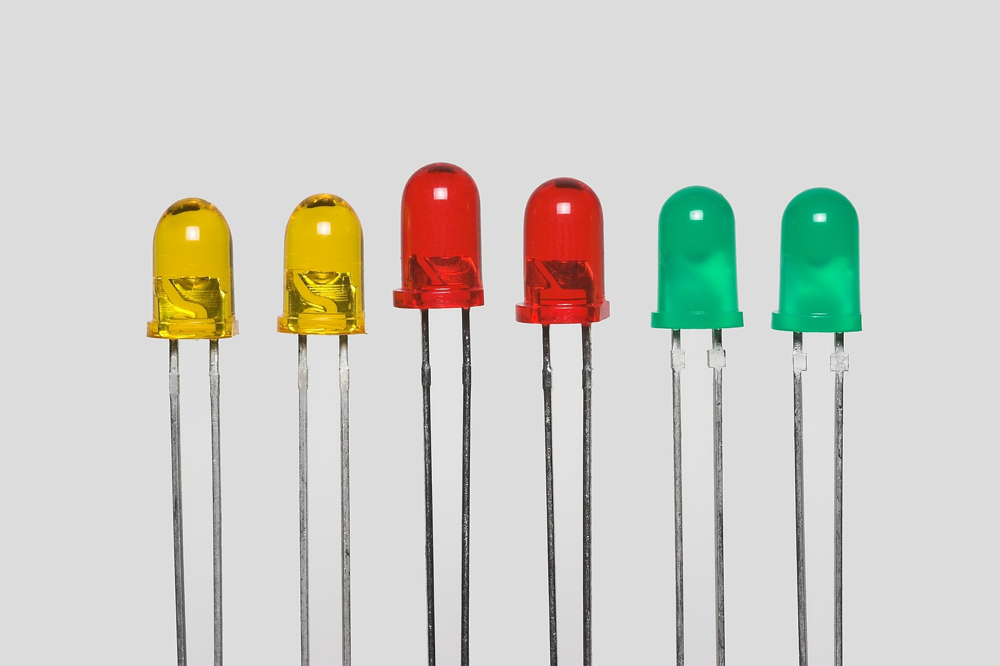
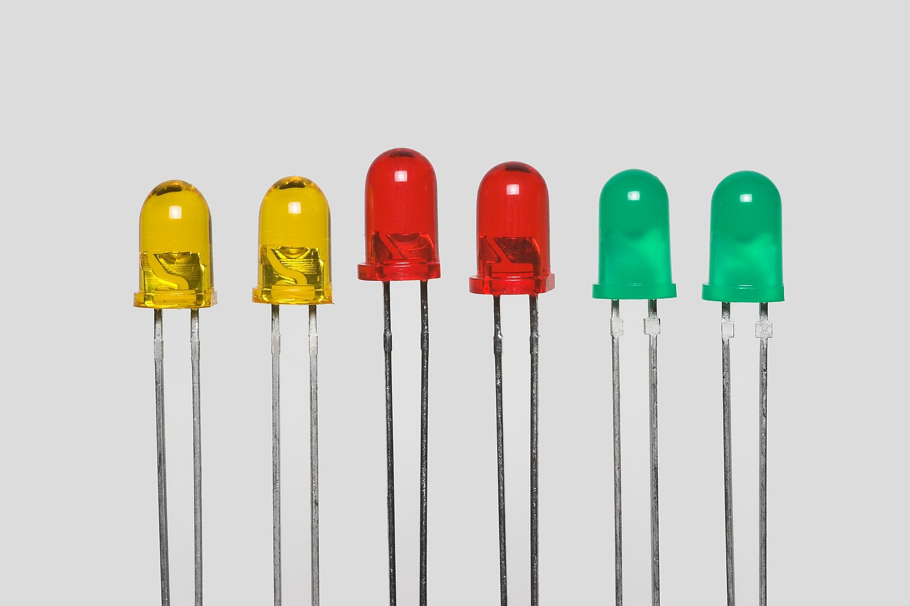

A continuación vamos a realizar algunas prácticas sencillas empleando únicamente luces LED.

A continuación vamos a realizar algunas prácticas sencillas empleando únicamente luces LED.

El primer programa que suele hacerse al aprender un lenguaje de programación nuevo es el "Hola Mundo" que muestra ese mensaje por pantalla. De este modo se comprueba que todo funciona correctamente. Para hacer esto en Arduino, en vez de hacer aparecer este texto, para comprobar que se ha instalado correctamente el IDE, y que funciona bien la placa, se crea un sencillo programa que hace parpadear el LED integrado en la propia placa.
Sigue los siguientes pasos para hacer esta práctica.
En esta práctica utilizaremos componentes conectados a la placa Arduino. Concretamente, un LED conectado al pin 5 de la placa que irá protegido con una resistencia de 220Ω (rojo-rojo-marrón).
Una vez realizadas las conexiones, programaremos la placa para que el LED se encienda y se apague a intervalos de 1 segundo.
En esta práctica vamos a simular las luces de un coche de policía. Para ello utilizaremos dos LEDs, el LED rojo conectado al pin 3, y el LED azul en el pin 5. Recuerda que debes protegerlos con su correspondiente resistencia de 220Ω (rojo-rojo-marrón).
Una vez realizadas las conexiones, realizaremos el programa para que se enciendan y apaguen de forma alterna en intervalos de 0.5 segundos.
En esta práctica hay que realizar la simulación de un semáforo para coches con 3 LEDs (verde, amarillo y rojo).
Conecta cada uno de los LEDs a un pin y protégelos con la correspondiente resistencia. El funcionamiento será como sigue:
AMPLIACIÓN:
Añadir al semáforo dos luces más para los peatones. Mientras las luces verde y amarilla del semáforo principal están encendidas, la luz roja de los peatones también lo está. Cuando se enciende la luz roja del semáforo principal, se enciende la luz verde de los peatones.
Obra publicada con Licencia Creative Commons Reconocimiento Compartir igual 4.0